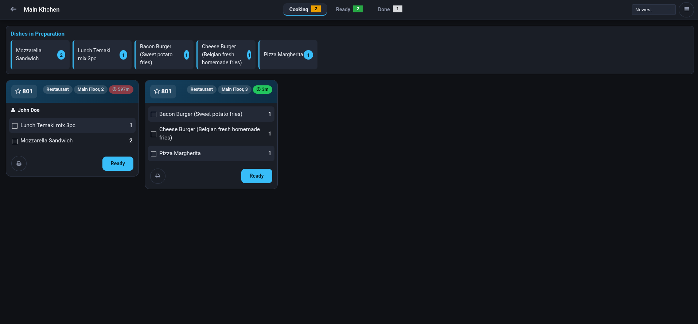
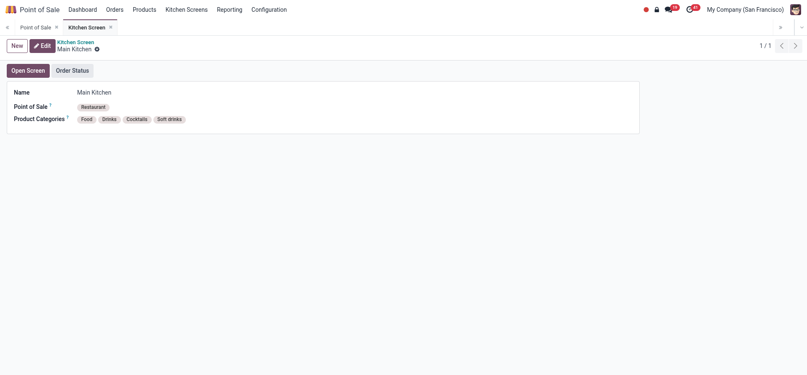
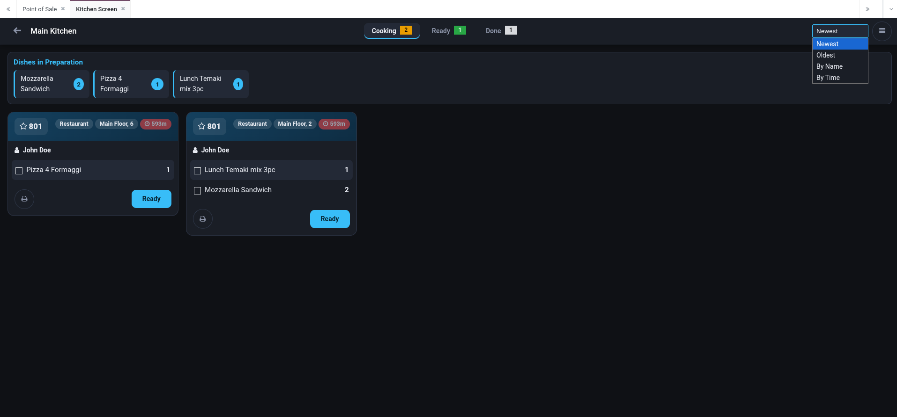
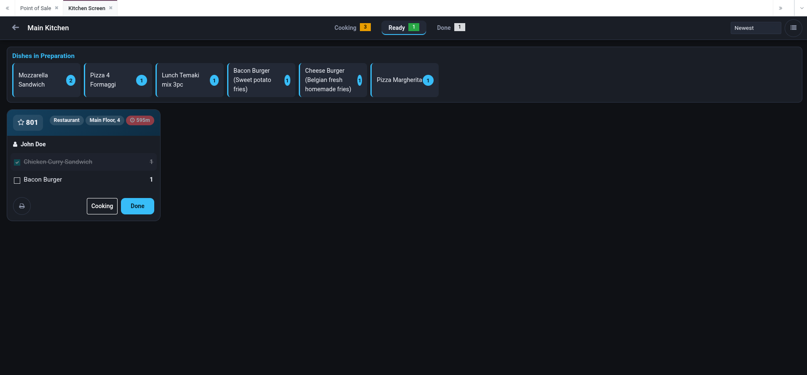
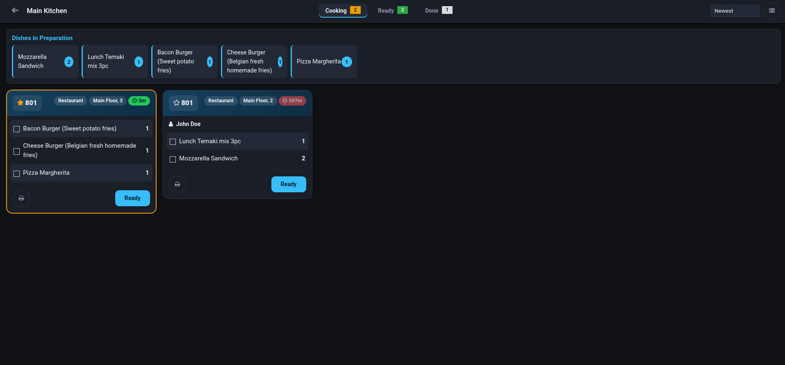
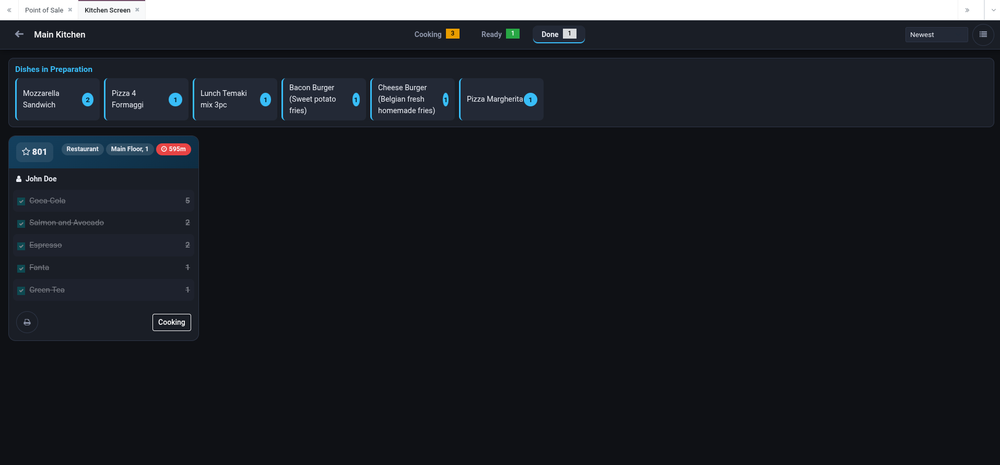
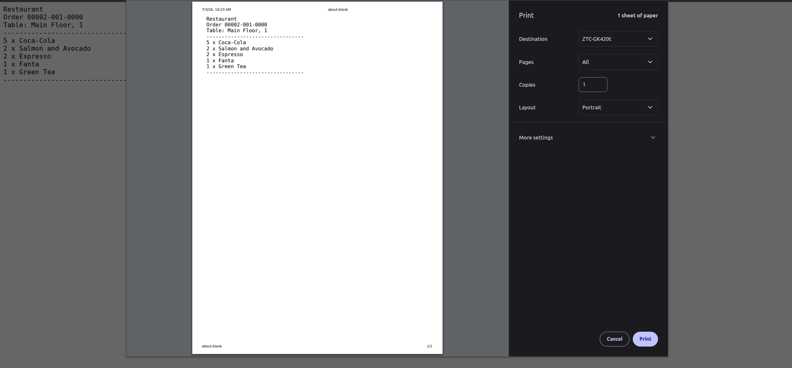

New POS orders appear on the kitchen display instantly over the Odoo bus. No refresh, no polling.
Main Kitchen, Bar, Dessert station: each screen has its own POS configurations and product categories.
Customer-facing screen with big green Ready and gray Cooking order numbers.







Every order shows its waiting time: green under 10 minutes, amber under 20, pulsing red beyond.
Tap a line to mark it prepared. Internal and customer notes show as badges next to the product.
Pin priority orders to the front with a star and print a preparation ticket per order.
A short beep alerts the kitchen whenever a new order lands on the screen.
One glance shows every dish currently in preparation with its total quantity.
Sort orders by newest, oldest, name or waiting time. Starred orders always stay on top.